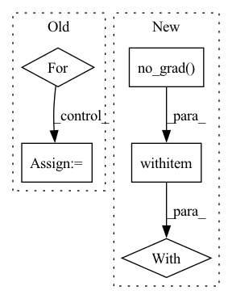

Pattern ID :27706
Before Change
self.run_optimizer(optimizer, loss, actor_parameters)
// reset critic parameters
for var in critic_parameters:
var.requires_grad = True
return ActorUpdaterLog(loss=loss.detach(), entropy=entropy.detach())
After Change
log_probs = distributions.log_prob(actions)
entropy = distributions.entropy().mean()
with T .no_grad():
values1 = critic1(observations, actions)
if critic2 is not None:
values2 = critic2(observations, actions)
values = T.min(values1, values2)In pattern: SUPERPATTERN
Frequency: 8
Non-data size: 5
Instances Fragment ID: 82196390
Project Name: londonnode/pearl
Commit Name: 630c4814f3e238ec120cfabf2023a4bf9156a22d
Time: 2021-09-24
Author: rohan.tangri@gmail.com
File Name: anvil/updaters/actors.py
M Class Name: SoftPolicyGradient
N Class Name: SoftPolicyGradient
M Method Name: __call__(5)
N Method Name: __call__(5)
M Parent Class: BaseActorUpdater
N Parent Class: BaseActorUpdater
M File Name: anvil/updaters/actors.py
N File Name: anvil/updaters/actors.py
M Start Line: 284
M End Line: 315
N Start Line: 287
N End Line: 295
Before Change
actor_parameters = actor.parameters()
optimizer = self.optimizer_class(actor_parameters, lr=self.lr)
// make sure critic isn"t updated!
for var in critic.parameters():
var.requires_grad = False
actions = actor(observations)
values = critic(observations, actions)After Change
optimizer = self.optimizer_class(actor_parameters, lr=self.lr)
actions = actor(observations)
with T .no_grad():
values = critic(observations, actions)
loss = -values.mean()
Fragment ID: 82196391
Project Name: londonnode/pearl
Commit Name: 630c4814f3e238ec120cfabf2023a4bf9156a22d
Time: 2021-09-24
Author: rohan.tangri@gmail.com
File Name: anvil/updaters/actors.py
M Class Name: DeterministicPolicyGradient
N Class Name: DeterministicPolicyGradient
M Method Name: __call__(4)
N Method Name: __call__(4)
M Parent Class: BaseActorUpdater
N Parent Class: BaseActorUpdater
M File Name: anvil/updaters/actors.py
N File Name: anvil/updaters/actors.py
M Start Line: 226
M End Line: 240
N Start Line: 227
N End Line: 230
Before Change
layer_dict = {0: 2, 1: 5, 2: 8, 3: 9, 4: 10, 5: 11, 6: 12, 7: 13, 8: 14, 9: 17, 10: 20, 11: None}
for layer_num_orig in range(12):
// Load the trained generator.
self.restore_model(self.test_iters)
// Set data loader.
if self.dataset == "CelebA":
data_loader = self.celeba_loader
elif self.dataset == "RaFD":
data_loader = self.rafd_loader
// Initialize Metrics
l1_error = 0.0
l2_error = 0.0
min_dist = 0.0
l0_error = 0.0
perceptual_error = 0.0
n_samples = 0
// 11 layers + output
// layer_num_orig = 11
print("Layer", layer_num_orig)
for i, (x_real, c_org) in enumerate(data_loader):
// Black image
black = np.zeros((1,3,256,256))
black = torch.FloatTensor(black).to(self.device)
// Prepare input images and target domain labels.
x_real = x_real.to(self.device)
c_trg_list = self.create_labels(c_org, self.c_dim, self.dataset, self.selected_attrs)
layer_num = layer_dict[layer_num_orig]
pgd_attack = attacks.LinfPGDAttack(model=self.G, device=self.device, feat=layer_num)
// Translate images.After Change
x_advs[c_trg] = x_adv, perturb
for c_trg in c_trg_list:
with torch .no_grad():
gen_noattack, gen_noattack_feats = self.G(x_real, c_trg)
// Attack
// x_adv, perturb = pgd_attack.perturb(x_real, black, c_trg)
_, perturb = x_advs[c_trg] Fragment ID: 82196402
Project Name: natanielruiz/disrupting-deepfakes
Commit Name: 4161e50d0efc7a176c9010f77b9c9e27746209d1
Time: 2019-12-26
Author: nruiz@Nataniels-MacBook-Pro.local
File Name: stargan/solver.py
M Class Name: Solver
N Class Name: Solver
M Method Name: test_attack(1)
N Method Name: test_attack(1)
M Parent Class: object
N Parent Class: object
M File Name: stargan/solver.py
N File Name: stargan/solver.py
M Start Line: 664
M End Line: 747
N Start Line: 576
N End Line: 659
Before Change
critic_parameters = critic1.parameters() + critic2.parameters()
else:
critic_parameters = critic1.parameters()
for var in critic_parameters:
var.requires_grad = False
distributions = actor.get_action_distribution(observations)
// use the reparametrization trick for backpropagationAfter Change
log_probs = distributions.log_prob(actions)
entropy = distributions.entropy().mean()
with T .no_grad():
values1 = critic1(observations, actions)
if critic2 is not None:
values2 = critic2(observations, actions)
values = T.min(values1, values2) Fragment ID: 82196401
Project Name: londonnode/pearl
Commit Name: 630c4814f3e238ec120cfabf2023a4bf9156a22d
Time: 2021-09-24
Author: rohan.tangri@gmail.com
File Name: anvil/updaters/actors.py
M Class Name: SoftPolicyGradient
N Class Name: SoftPolicyGradient
M Method Name: __call__(5)
N Method Name: __call__(5)
M Parent Class: BaseActorUpdater
N Parent Class: BaseActorUpdater
M File Name: anvil/updaters/actors.py
N File Name: anvil/updaters/actors.py
M Start Line: 284
M End Line: 315
N Start Line: 287
N End Line: 295
Before Change
if not isinstance(sequences, list):
sequences = [sequences]
for seq in sequences:
if len(seq) != 221: raise AssertionError("Only sequences of length 221 allowed for this model")
test_data = np.stack([self._preprocess_seq(s) for s in sequences], axis=0)
test_pool = Pool(test_data, cat_features=np.arange(221 + (221 if WITH_BIGRAM else 0) + (221 if WITH_BIGRAM_O1 else 0)))
test_preds = self.model.predict(test_pool)
pred_list = [{self.score_names()[0]: pred} for pred in test_preds]After Change
test_data = np.stack([self._preprocess_seq(s) for s in sequences], axis=0)
test_preds = []
for item in test_data:
with torch .no_grad(): test_preds.append(self.model(torch.tensor(item[None], device=self._device)).item())
pred_list = [{self.score_names()[0]: pred} for pred in test_preds]
Fragment ID: 82196398
Project Name: deepchainbio/deepchain-apps
Commit Name: 8ea8496d141958acef5fd2035cbee5564cf12285
Time: 2021-04-16
Author: k.eloff@hotmail.co.za
File Name: example/pytorch_app/src/app.py
M Class Name: App
N Class Name: App
M Method Name: compute_scores(2)
N Method Name: compute_scores(2)
M Parent Class: DeepChainApp
N Parent Class: DeepChainApp
M File Name: example/pytorch_app/src/app.py
N File Name: example/pytorch_app/src/app.py
M Start Line: 76
M End Line: 83
N Start Line: 71
N End Line: 76
Before Change
device=self._grad_buffer.device,
)
weights_idx = 0
for idx, mask_diff in enumerate(mask_diffs):
indices = self._unpruned_idxs[idx]
next_idx = weights_idx + indices.numel()
weights_to_prune[weights_idx:next_idx] = (
self._params[idx].data.view(-1)[indices]
* (mask_diff.view(-1)[indices] == -1.0) // newly pruned weights
).to(weights_to_prune.device)After Change
indices = self._unpruned_idxs[idx]
next_idx = weights_idx + indices.numel()
with torch .no_grad():
param.view(-1)[self._unpruned_idxs[idx]] += perturb[
weights_idx:next_idx
].to(param.device)
Fragment ID: 82196399
Project Name: neuralmagic/sparseml
Commit Name: ef782b8597e4b0dbb67283051ca5b325cbee9dd7
Time: 2021-06-11
Author: bfineran@users.noreply.github.com
File Name: src/sparseml/pytorch/optim/mask_pruning_scorer.py
M Class Name: MFACPruningParamsScorer
N Class Name: MFACPruningParamsScorer
M Method Name: mask_update(3)
N Method Name: mask_update(3)
M Parent Class: PruningParamsGradScorer
N Parent Class: PruningParamsScorer
M File Name: src/sparseml/pytorch/optim/mask_pruning_scorer.py
N File Name: src/sparseml/pytorch/optim/mask_pruning_scorer.py
M Start Line: 297
M End Line: 323
N Start Line: 417
N End Line: 434
Before Change
s_rep = agent.encoder(o)
loss = 0.0
for actor in agent.actors:
dist = actor(s_rep)
if discrete:
logp_a = dist.log_prob(a.squeeze(1)).unsqueeze(1)
else:After Change
// binary filter
mask = (adv >= 0.0).float()
adv_weights = mask
with torch .no_grad():
s_rep = agent.encoder(o)
dist = agent.actors[ensemble_idx](s_rep)
if discrete:
logp_a = dist.log_prob(a.squeeze(1)).unsqueeze(1) Fragment ID: 82196396
Project Name: jakegrigsby/super_sac
Commit Name: 1a05934faef9e4e9e7f60afe1f7595231eb23d07
Time: 2021-10-12
Author: jcg6dn@virginia.edu
File Name: uafbc/learning_utils.py
M Class Name: AnonimousClass
N Class Name: AnonimousClass
M Method Name: filtered_bc_loss(6)
N Method Name: filtered_bc_loss(5)
M Parent Class:
N Parent Class:
M File Name: uafbc/learning_utils.py
N File Name: uafbc/learning_utils.py
M Start Line: 168
M End Line: 188
N Start Line: 167
N End Line: 185
Before Change
model.train()
for epoch in range(1, num_epochs + 1):
loss_avg = 0
for i , (inputs, labels) in enumerate(tqdm(train_loader, leave=False), start=1):
inputs = inputs.to(device)
labels = labels.to(device)
outputs = model(inputs)
loss = criterion(outputs, labels)
optimizer.zero_grad()
loss.backward()After Change
train_loss = run_epoch(model, train_loader, device, criterion, optimizer)
train_loss_history.append(train_loss)
model.eval()
with torch .no_grad():
val_loss = run_epoch(model, val_loader, device, criterion)
val_loss_history.append(val_loss)
if verbose:
tqdm.write( Fragment ID: 82196395
Project Name: jaketae/deep-malware-detection
Commit Name: 745a3e07407c7a3bac0f9828d6c42101d998c3c6
Time: 2020-11-23
Author: jaesungtae@gmail.com
File Name: train.py
M Class Name: AnonimousClass
N Class Name: AnonimousClass
M Method Name: train(9)
N Method Name: train(8)
M Parent Class:
N Parent Class:
M File Name: train.py
N File Name: train.py
M Start Line: 20
M End Line: 53
N Start Line: 16
N End Line: 46
Before Change
batch_size=batchsize,
**kwargs)
for data in self.dataloader:
lpos = data.to(self.device)
lpos.requires_grad = True
eloc = self.wf.local_energy(lpos)
eloc_all = hvd.allgather(eloc, name="local_energies")After Change
nw=self.sampler.nwalkers, ns=self.sampler.nstep))
// check if we have to compute and store the grads
grad_mode = torch.no_grad()
if self.wf.kinetic == "auto":
grad_mode = torch.enable_grad()
// distribute the calculation
num_threads = 1
hvd.broadcast_parameters(self.wf.state_dict(), root_rank=0)
torch.set_num_threads(num_threads)
with grad_mode :
// sample the wave function
pos = self.sampler(self.wf.pdf)
if self.wf.cuda and pos.device.type == "cpu":
pos = pos.to(self.device)
Fragment ID: 82196392
Project Name: nlesc-jcer/qmctorch
Commit Name: 9c3e63cd2b3fe345a850beb13cc978a28a4945b0
Time: 2020-07-16
Author: nicolas.gm.renaud@gmail.com
File Name: qmctorch/solver/solver_orbital_horovod.py
M Class Name: SolverOrbitalHorovod
N Class Name: SolverOrbitalHorovod
M Method Name: single_point(3)
N Method Name: single_point(3)
M Parent Class: SolverOrbital
N Parent Class: SolverOrbital
M File Name: qmctorch/solver/solver_orbital_horovod.py
N File Name: qmctorch/solver/solver_orbital_horovod.py
M Start Line: 223
M End Line: 279
N Start Line: 220
N End Line: 276